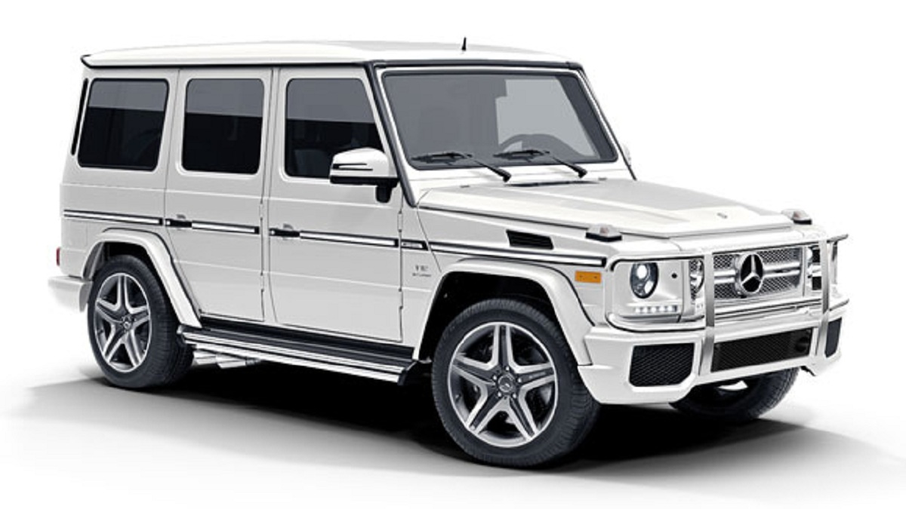
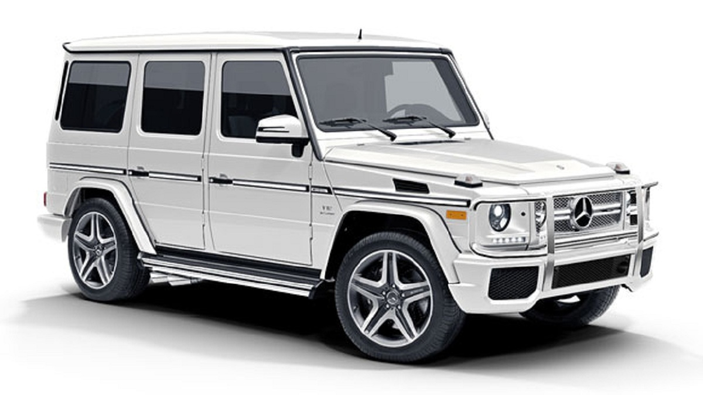

Mercedes-Benz
 

Mercedes-Benz (Мерседес-Бенц) Название «Мерседес» автомобили фирмы, сконструированный ее сотрудником Вильгельмом Майбахом, получили в честь дочери одного из соучредителей фирмы — гонщика Эмиля Еллинека. «Мерседес» называются авто всех семейств фирмы, различаются они лишь буквенно-цифровым обозначением. Название Mercedes-Benz прочно ассоциируется с представительскими автомобилями, сочетающими красоту, комфорт и безопасность. В 50-е годы прославился Mercedes-Benz 300, в 60-е — «шестисотый». В 90-е годы Мерседес начал выпуск моделей различных классов — от внедорожников до компактных малолитражек.
История
История марки Mercedes-Benz слагается из историй двух известных немецких автомобильных компаний — Benz & Cie. (основана Карлом Бенцем в 1883 году) и Daimler-Motoren-Gesellschaft (основана Готлибом Даймлером в 1890 году). Обе компании развивались самостоятельно до 1926 года, когда они объединились в единый концерн Daimler-Benz, впоследствии переименованный в Daimler AG.
1 октября 1883 Карл Бенц основал компанию «Бенц и Ко. Райнише Газмоторен-Фабрик, Манхайм» (Benz & Cie.) в форме открытого торгового общества вместе с бизнесменом Максом Каспаром Розе и коммерсантом Фридрихом Вильгельмом Эсслингером. В 1886 году предприятием была создана первая трёхколёсная самоходная повозка с бензиновым двигателем. В этом же году 29 января её создатель — Карл Бенц — получил патент DRP No. 37435 на это изобретение). Впоследствии трёхколёсный автомобиль был запущен в серийное производство.
В 1893 году Карл Бенц получил патент DRP No. 73515 для двойного стержня управления и инициировал выпуск четырёхколёсных автомобилей «Виктория» с двигателем мощностью 3 л. с., скорость которых составляла 17-20 км/ч. За первый год было продано 45 таких автомобилей. В 1894 году компания начала выпуск автомобилей модели «Velo», которые участвовали в первых автомобильных гонках Париж — Руан. В 1895 году был создан первый грузовик, а также первые в истории автобусы.
Через год, в 1896 году, фирма Benz & Cie. разработала первый цилиндр для двигателей, которые Бенц назвал «contra engine», поскольку цилиндры были установлены противоположно друг другу.
В 1901 году, вскоре после выпуска Даймлером новой модели «Mercedes 35 PS», становится понятно, насколько фирма отстаёт от прогресса. С целью улучшения положения акционеры приглашают в компанию французского инженера Мариуса Барбару. Из-за технических разногласий Карл Бенц покинул собственную компанию. Вскоре стало ясно, что французский конструктор не оправдывает возложенных на него надежд. Следуя логике, что немецкие автомобили должны делаться немцами, в фирму на должность главного инженера приглашён Фриц Эрле. Эта идея также оказалось неудачной. Только с приходом в компанию талантливого инженера Ганса Нибеля дела постепенно начали идти в гору. В 1909 году, создав целый ряд успешных легковых автомобилей, фирма построила самый известный гоночный автомобиль того времени «Блитцен Бенц» с двигателем мощностью в 200 лошадиных сил и рабочим объёмом 21 594 см3.
В послевоенные годы было создано множество новых моделей, большинство из которых с успехом выпускались до середины двадцатых годов. Всего с момента начала производства в 1886 году и до объединения с «Даймлер-Моторен-Гезелльшафт» в 1926 году, фирма «Бенц и Ко.» произвела 47 555 транспортных средств, включая легковые автомобили, грузовики и омнибусы.